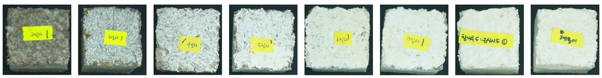
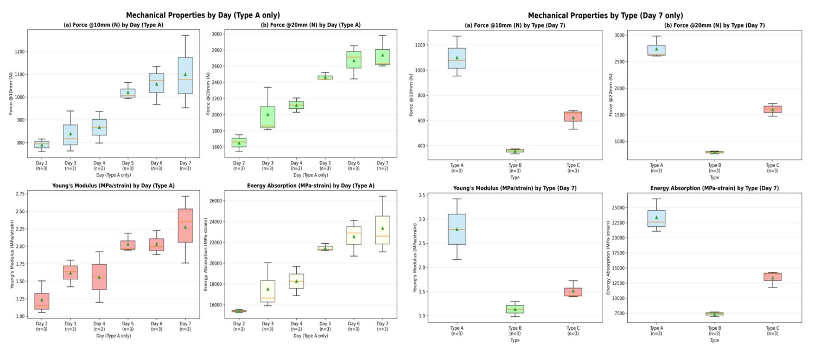
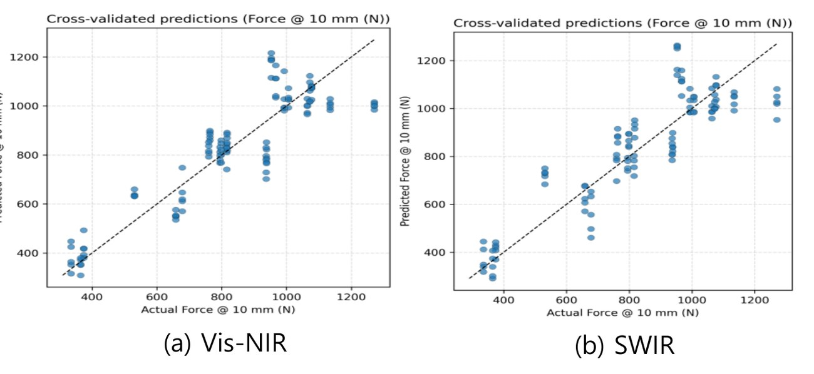

균사체(Mycelium) 복합소재는 스티로폼을 대체할 친환경 완충재로 주목받고 있음. 문제는 기계적 물성 평가가 파괴 시험에만 의존한다는 것 — 시편을 눌러 부숴야 강도를 알 수 있으니 공정 중 실시간 모니터링이 불가능함.
분광·초분광 센서로 물성을 비파괴 예측할 수 있는지, 그리고 어떤 센서 사양이 실제로 유효한지를 판별하는 것이 이 연구의 질문이었음. 담당 파트는 센서 데이터 수집·전처리·회귀 모델링·검증 설계임.
기질 3종으로 시편을 제작함 — Type A 참나무(배양 2–7일차), Type B 참나무+은사시나무(7일차), Type C 폐종이(7일차). 시료당 3개 샘플.

시편 제공 — 국립원예특작과학원 인삼특작부 버섯과 · ㈜어스폼
점 분광 2종과 라인스캔 초분광 2종, 총 4종으로 동일 시편에 대한 데이터를 취득해 센서 간 직접 비교가 가능하도록 구성함. 여기에 측색계(KSP SM245)로 Lab 색 공간 데이터를 병행 수집해 표면 색 변화도 함께 봤음.
| 구분 | 기기 | 파장 범위 | 측정 방식 |
|---|---|---|---|
| Vis-NIR 분광 | OceanOptics | 400–1,000 nm | 점 분광 |
| NIR-SWIR 분광 | KSP SM304 | 900–1,700 nm | 점 분광 |
| Vis-NIR 초분광 | Specim FX10 | 400–1,000 nm | 라인 스캔 |
| SWIR 초분광 | KSP3 | 1,200–1,700 nm | 라인 스캔 |
| 측색계 | KSP SM245 | Lab 색 공간 | 표면 색 측정 |
UTM 압축 시험으로 기준값을 확보함 — Ø80mm 원형 프로브로 시편 전체를 균일 가압, 속도 25mm/min, 변위 −20mm. 측정 지표는 4종.

참나무 기질은 배양 일수가 늘수록 평균 Force가 단조 증가했고(ANOVA — Force@10mm F=8.01, p=0.0020 / Force@20mm F=7.42, p=0.0027), 5일차 이후로는 분산이 줄며 물성이 안정화됨. 같은 7일차 기준 기질별 압축 강도는 참나무 > 폐종이 > 참나무+은사시 순으로, 참나무 단일 기질의 조직이 가장 치밀했음.
초분광은 Dark/White reference 보정 후 ROI를 잡고 전 방향 20픽셀 erosion으로 가장자리 노이즈를 제거, Savitzky–Golay(window 15, poly 2)와 SNV로 조도 변동을 정규화함. KSP3은 per-pixel flat-field 보정 후 1,200nm 이상 밴드만 사용.
모델은 PLS Regression(StandardScaler, max 10 components), 검증은 시편 단위 GroupKFold — 같은 시편에서 나온 샘플이 학습과 검증에 동시에 들어가면 성능이 과대평가되므로 시편 단위로 묶어 분할함. 초분광 세트는 115개 ROI / 23개 시편 기준.
| 센서 | Force@10mm | Force@20mm | Modulus | Energy |
|---|---|---|---|---|
| Specim FX10 (400–1,000nm) | 0.78 | 0.89 | 0.77 | 0.87 |
| KSP3 (1,200–1,700nm) | 0.795 | 0.844 | 0.800 | 0.837 |
전체 R² · 시편 단위 GroupKFold 5-fold · 115 ROI / 23 시편

Vis-NIR(Specim)이 전체 R² 0.77–0.89로 우세함. 770–820nm의 Red-edge 구조적 산란 정보를 함께 볼 수 있기 때문으로 판단함. 다만 fold별로 보면 Force@10mm은 0.58 ± 0.50으로 변동이 크고, Force@20mm는 0.85 ± 0.10으로 안정적임 — 지표에 따라 신뢰도가 다르다는 점을 함께 기재함.
SWIR(KSP3)은 수분·구조 밴드만으로 0.795–0.844의 동등한 수준을 냈음. 이는 Red-edge 없이 좁은 장파장 대역만 쓰는 저비용 소형 센서로도 시스템 설계가 가능하다는 근거가 됨.
| 센서 · 기준 | Force@10mm | Force@20mm | Modulus | Energy |
|---|---|---|---|---|
| Vis-NIR 전체 R | 0.84 | 0.83 | 0.63 | 0.84 |
| Vis-NIR fold 평균 R | 0.26 ±0.73 | 0.27 ±0.71 | 0.11 ±0.82 | 0.29 ±0.69 |
| NIR-SWIR 전체 R | 0.89 | 0.88 | 0.76 | 0.87 |
| NIR-SWIR fold 평균 R | 0.78 ±0.06 | 0.73 ±0.09 | 0.64 ±0.11 | 0.77 ±0.07 |
R(상관계수) 기준 · Vis-NIR OceanOptics 400–1,000nm (7-fold) / NIR-SWIR KSP SM304 900–1,700nm (5-fold) · 초분광 결과는 R²라 지표가 다름
전체 R만 보면 Vis-NIR도 0.84로 나쁘지 않아 보임. 그런데 fold별로 나눠 보면 평균이 0.26에 편차 ±0.73임. 어떤 분할에서는 맞고 어떤 분할에서는 완전히 빗나간다는 뜻으로, 전체 데이터를 한 번에 볼 때만 상관이 살아 있는 상태임. 원인은 조도 환경과 표면 색상(갈변·백색화) 의존.
NIR-SWIR은 같은 조건에서 fold 평균 0.78 ± 0.06으로 안정적이었음. 색이 아니라 화학적 흡광 특성(1,450nm 부근 O–H 흡광 골)에 기반하기 때문임.
전체 지표 하나만 보고 판단했다면 Vis-NIR을 골랐을 상황이었고, fold별 분산을 함께 본 덕분에 실용 대역을 NIR-SWIR로 정리할 수 있었음.
KSP3은 Red-edge 없이 1,275–1,480nm 두 대역만으로 Force·Energy를 설명했고, 이것이 장파장 기반 밴드 축소형 센서 설계의 근거가 됨.
표면 색이 물성을 설명할 수 있는지 확인하려고 측색계(KSP SM245)로 Lab 색 공간 데이터를 함께 수집했음. 배양 일수가 늘수록 기질 본래의 갈색이 균사에 덮이며 명도(L)가 올라가는 경향은 뚜렷했음.
그런데 기질별로 비교하면 결론이 뒤집힘 — 명도는 폐종이가 가장 높고 참나무가 가장 낮은데, 압축 강도는 반대로 참나무가 가장 높았음. 색은 균사의 밀도가 아니라 기질 자체의 바탕색에 지배된다는 뜻임.
표면 색 정보보다 NIR 대역의 내부 화학 조성 정보가 물성 예측에 적합하다고 판단하고, 측색 데이터는 예측 변수에서 제외함.